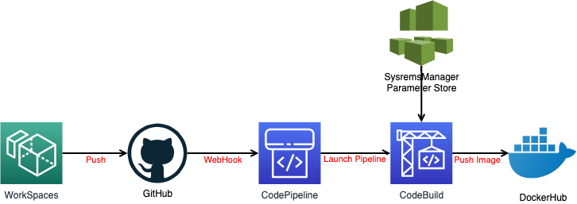

2. 20201207¶
2.1. パイプラインの構築（ビルド編）¶
2.1.1. アプリケーション¶
塾長のサンプルアプリを拝借 https://github.com/debugroom/mynavi-sample-continuous-integration/tree/develop
2.1.2. buildspec.yml¶
version: 0.2 env: parameter-store: DOCKER_USER: "MA_YAMADA_DOCKER_USER" DOCKER_PASSWORD: "MA_YAMADA_DOCKER_PASSWORD" DOCKER_REPO : "MA_YAMADA_DOCKER_REPO" IMAGE_REPO_NAME: "MA_YAMADA_BACKEND_IMAGE_REPO_NAME" IMAGE_TAG: "MA_YAMADA_BACKEND_IMAGE_TAG_STAGING" phases: install: runtime-versions: docker: 18 pre_build: commands: - echo Logging in to Docker Hub... - docker login -u $DOCKER_USER -p $DOCKER_PASSWORD $DOCKER_REPO build: commands: - echo Build started on `date` - echo Building the Docker image... - docker build -t $IMAGE_REPO_NAME:$IMAGE_TAG backend/build/production - docker tag $IMAGE_REPO_NAME:$IMAGE_TAG $IMAGE_REPO_NAME:$IMAGE_TAG post_build: commands: - echo Build completed on `date` - echo Pushing the Docker image... - docker push $IMAGE_REPO_NAME:$IMAGE_TAG - printf '[{"name":"mynavi-sample-continuous-delivery-backend-staging","imageUri":"%s"}]' $IMAGE_REPO_NAME:$IMAGE_TAG > imagedefinitions.json artifacts: files: - imagedefinitions.json